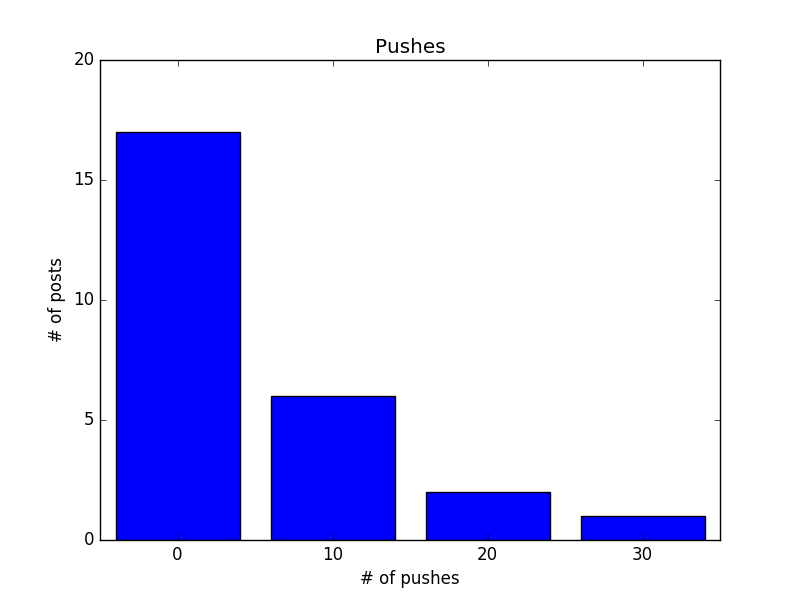
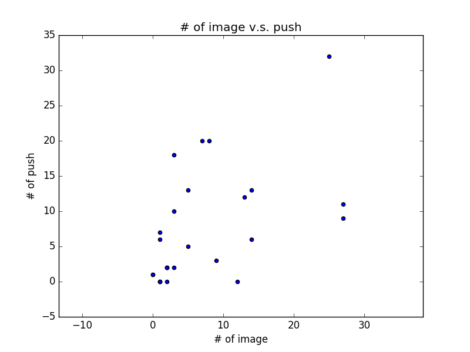

資料科學
給初學者的 Python 網頁爬蟲與資料分析
(4) 擷取資料及下載圖片
Read More
這篇文章會示範簡單的統計分析 (平均值與相關係數) 與資料視覺化 (histogram 與 scatter plot)，最後會淺談資料科學的三個面向作為本系列文章總結。
藉由之前的範例程式，我們已經有了今天 PTT Beauty 板所有貼文的一些資訊。假設我們想進一步認識或分析手上的數據，或對資料維度的相關性作些假設，就需要統計分析與視覺化的幫助。例如我們對貼圖數與推文數有興趣，且假設「文章內有越多貼圖會得到越多推」，第一步先將資料從 example.json 讀入之後，馬上就能得知它們的極值：
有了原始資料的 list, 平均值的計算也很容易，
接著我們想知道是否「文章內有越多貼圖會得到越多推」，一個方式是計算相關係數，相關係數是共變異數 (covariance) 除以標準差 (standard deviation) 的乘積，公式可參考 此處。因此，除了平均值之外，我們還需要計算偏差值 (deviation), 變異數 (variance) 與內積 (dot) 的函式
有了相關函式後，相關係數可依公式計算
相關係數是 -1 到 1 之間的值，越接近 1 代表兩個維度越接近線性正相關，反之則為線性負相關。這個例子中的 0.5258 代表一定程度的正相關，看到這邊你一定有疑問：推文數怎麼可能被貼圖數決定？難道我貼一堆海綿寶寶圖也會被推爆嗎？當然不可能，而這個例子也引出了你可能聽過的說法：相關不代表因果 (correlation is not causation)。事實上，我們解讀相關係數時必須多方考慮，如果 x 與 y 高度正相關，可能代表：
除了直接計算統計數據，將資料視覺化也是幫助我們認識資料的好辦法，例如我想知道推文數的分布，可以試著畫出 histogram, 把小於 10 推, 20 推, 30 推的文章數量以條狀圖顯示
另外，也可以考慮直接畫出資料的散佈圖 (scatter plot)，觀察相關性
從 scatter plot 我們可以稍微看出圖片數與推文數的正相關性
從這系列的文章，相信你已經看出所謂的資料科學與資料分析，其實可概分為三個面向：
所以如果你對資料科學有興趣，你可能是對架構系統有興趣(提供乾淨資料)，或對於玩資料有興趣(喜歡統計分析，精通機器學習，或是有足夠的領域知識發掘好問題)，也可以思考以你的背景從哪一塊切入會比較適合。
“Happy coding.”
文章也同步刊登在 Jun-Wei Lin blogs